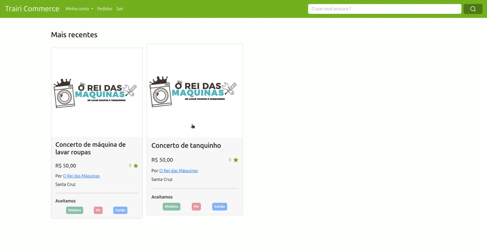
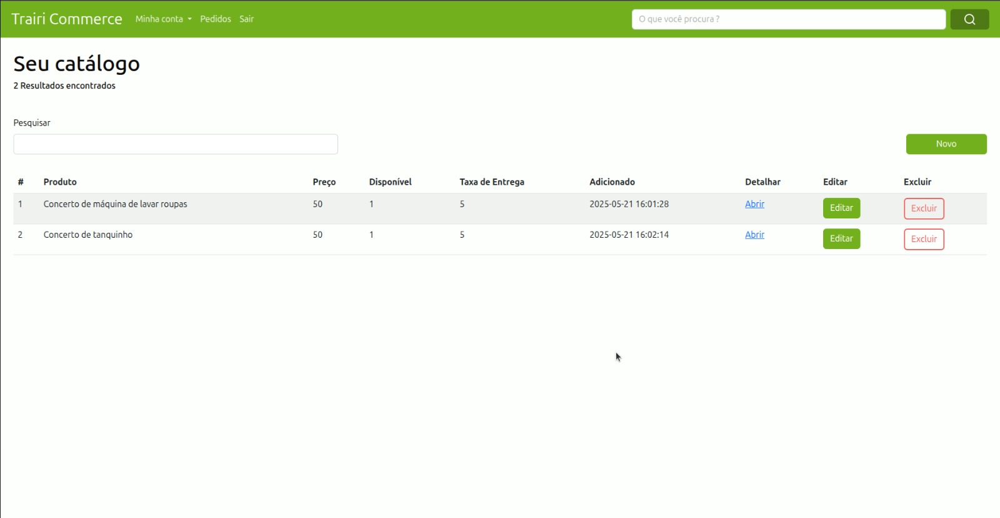
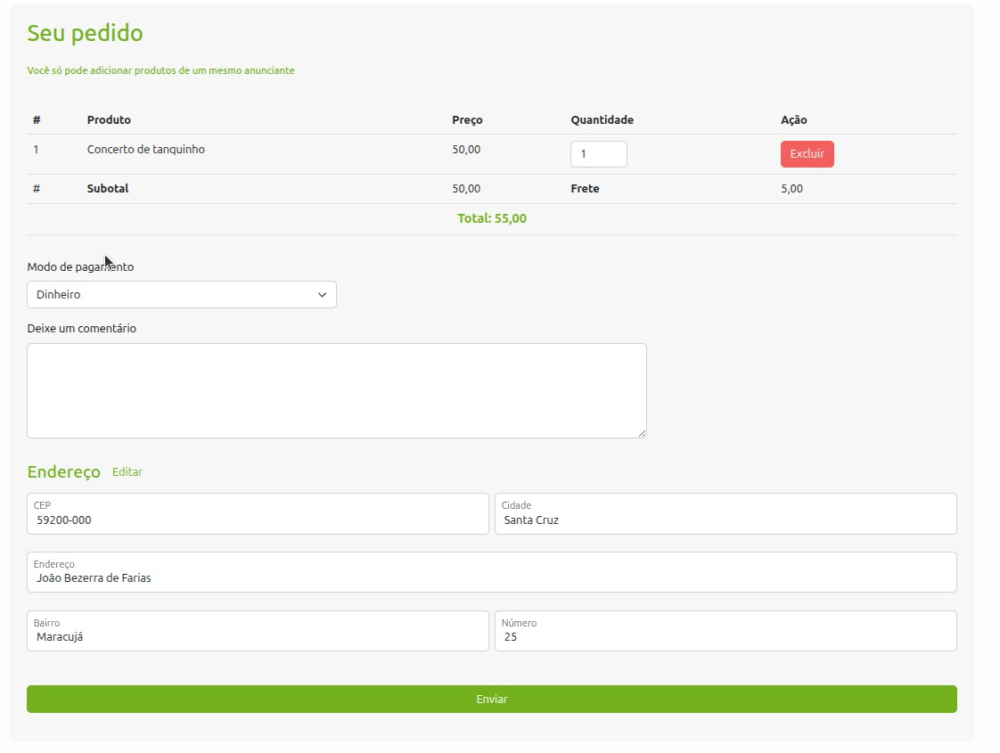
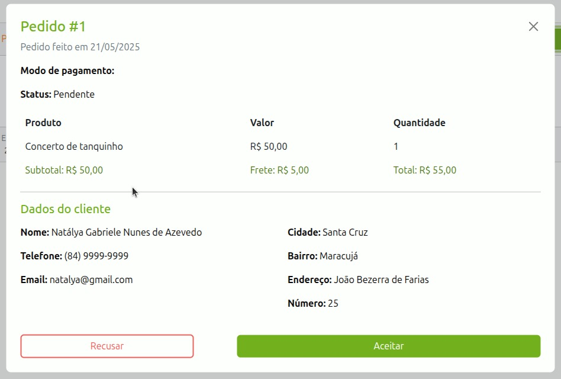
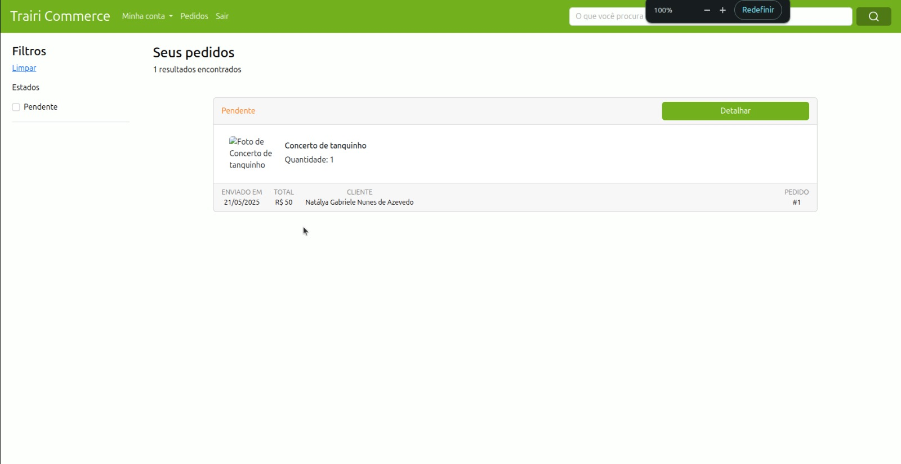
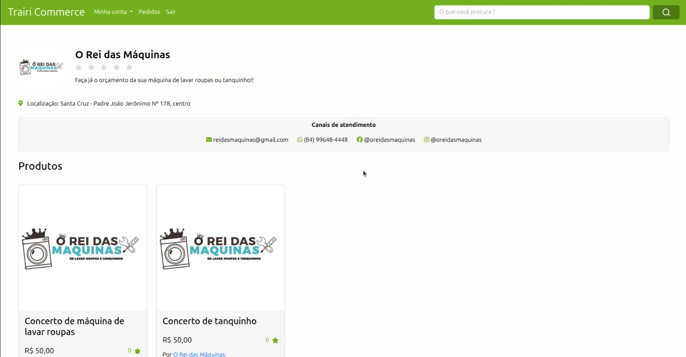
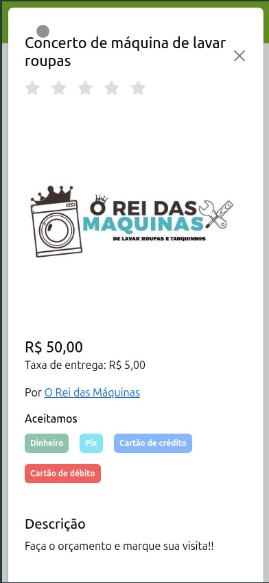
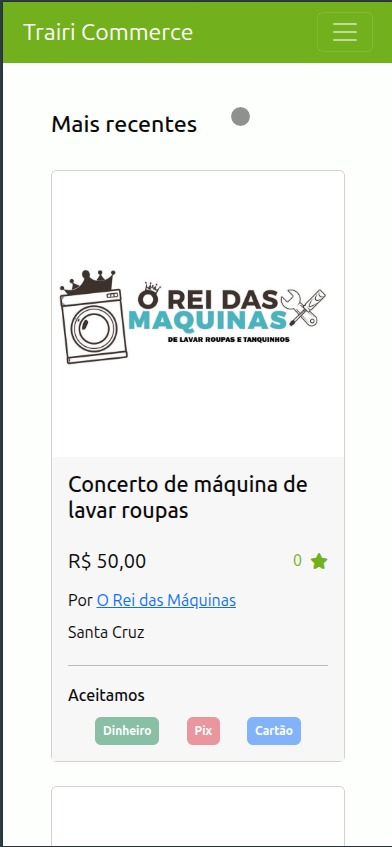

Trairi Commerce
Descrição
O Trairi Commerce é uma plataforma web voltada para pequenos comerciantes e prestadores de serviços da região do Trairi. Seu objetivo é facilitar a divulgação de produtos e serviços locais, criando uma ponte entre clientes e anunciantes.
Funcionalidades
- Cadastro de perfis profissionais para anunciantes
- Publicação de produtos e serviços com fotos e descrições
- Gerenciamento de pedidos pelos anunciantes
- Busca por produtos e serviços por parte dos clientes
- Favoritar produtos
- Comentários pós-compra
- Realizar pedidos diretamente pela plataforma
- Acompanhamento do status dos pedidos
Tecnologias Utilizadas
- Laravel (backend)
- JavaScript
- TailwindCSS
- HTML
- CSS
Interface do Sistema
Abaixo você pode visualizar algumas telas do sistema:







